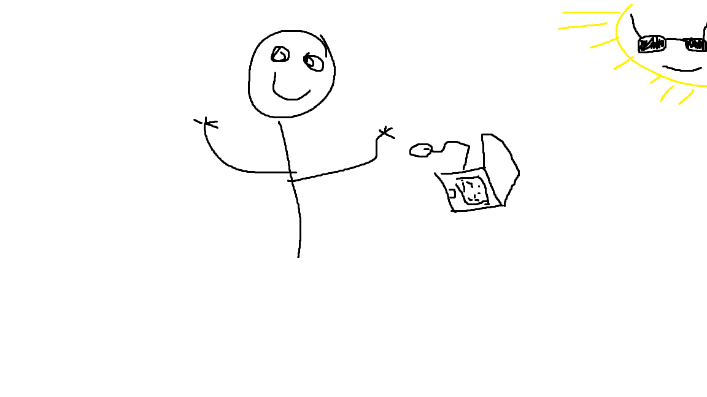

Chris Huddleston
Software Developer
My favorite thing about programming are all of the cool colors in the terminal
My Projects
About Me
My name is Chris, and I'm a chess enthusiast who lives in Alaska near a beautiful lake. I love to play chess in the middle of a barn, surrounded by nature's tranquility. My favorite variant of chess is called "Angry Mobster Sharks," which I invented myself. I have been playing chess for over a decade now, and it has become a passion of mine. I find the game to be challenging and mentally stimulating, which keeps me coming back for more. However, I always felt like there was something missing from traditional chess, which led me to invent my variant. "Angry Mobster Sharks" is an exciting game that involves replacing pawns with sharks and placing the queen and king in the center of the board with their respective bishops on each side. This variant adds an extra layer of strategy and difficulty to the game, which I find thrilling. I have become quite skilled at playing this game and have organized local chess tournaments for others in the area who share my love for the game. The unique variant has attracted a small but dedicated following of players who appreciate the added challenge. In my free time, you can usually find me in my barn playing a game of "Angry Mobster Sharks" or teaching others how to play. I enjoy sharing my passion for the game and exploring new variations of chess. Chess has become an integral part of my life, and I look forward to playing it for many years to come.
Contact Me
Email: crustykrab@gmail.com
Phone Number: 911
